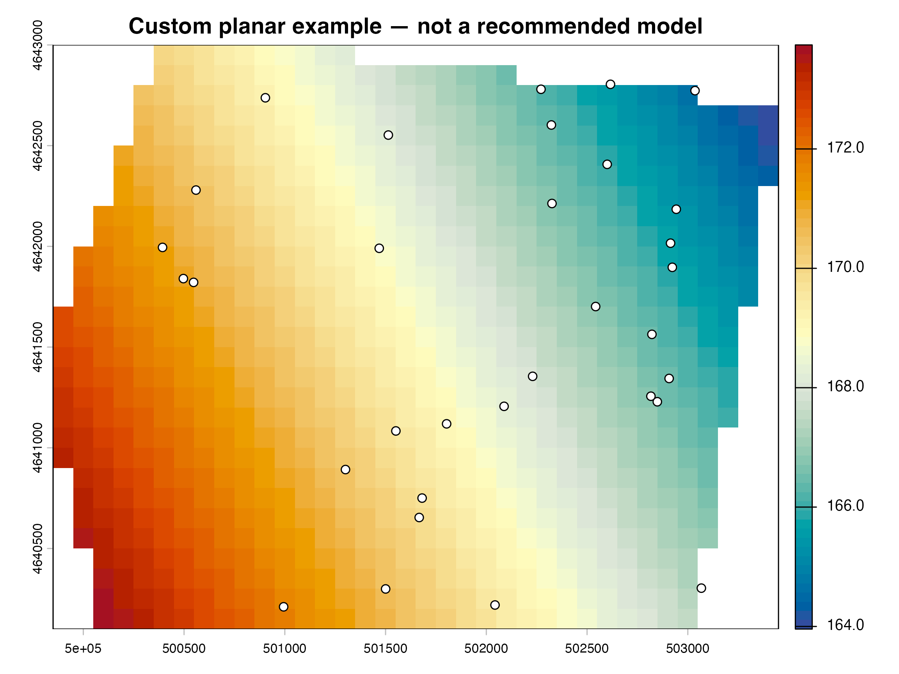

Custom interpolation functions
custom-interpolation.RmdA custom function is called exactly as
fun(points, template, grid). It must return either a
SpatRaster matching the template or one numeric value per
template cell. The following plane is intentionally simple: it
demonstrates the interface, not a scientific recommendation.
planar_method <- function(points, template, grid) {
stopifnot(
inherits(points, "SpatVector"),
inherits(template, "SpatRaster"),
is.data.frame(grid),
identical(names(grid), c("X", "Y")),
nrow(grid) == ncell(template),
"Z" %in% names(values(points))
)
xy <- as.data.frame(crds(points))
names(xy) <- c("X", "Y")
xy$Z <- values(points)$Z
if (nrow(xy) < 3 || any(!is.finite(xy$Z))) {
stop("The planar example needs at least three finite observations.")
}
fit <- lm(Z ~ X + Y, data = xy)
prediction <- predict(fit, newdata = grid)
stopifnot(is.numeric(prediction), length(prediction) == ncell(template))
prediction
}
data("synthetic_wells", package = "potentiomap")
points <- ps_make_points(
synthetic_wells, "x", "y", "gw_elevation", "well_id", "EPSG:26916"
)
surface <- ps_interpolate(
points,
methods = "planar",
custom_methods = list(planar = planar_method),
grid_res = 100,
mask = ps_sample_aoi(),
padding = 0
)$planar
data.frame(
class = class(surface)[1],
rows = nrow(surface), columns = ncol(surface),
x_resolution_m = res(surface)[1],
finite_cells = global(surface, "notNA")[[1]]
)
#> class rows columns x_resolution_m finite_cells
#> 1 SpatRaster 29 36 100 904
plot(surface, col = hcl.colors(64, "RdYlBu", rev = TRUE),
main = "Custom planar example — not a recommended model")
plot(points, add = TRUE, pch = 21, bg = "white")
expected <- rast(crs = crs(points), ext = ext(ps_sample_aoi()), resolution = 100)
data.frame(
same_crs = same.crs(surface, expected),
x_resolution_m = res(surface)[1],
y_resolution_m = res(surface)[2],
masked = global(is.na(surface), "sum")[[1]] > 0
)
#> same_crs x_resolution_m y_resolution_m masked
#> 1 TRUE 100 100 TRUEFor a production custom method, add method-specific diagnostics,
parameter records, unit tests, and validation. Do not rely on
potentiomap::: internals; the documented function signature
is the stable public boundary.